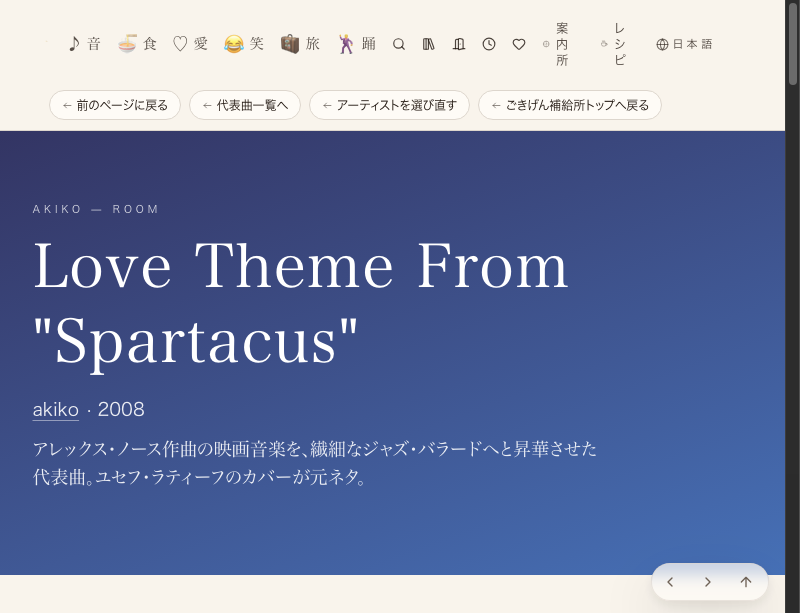

getBoundingClientRect()で実測し、外れたら自動でFAILにする仕組みに変えた。まず①バッジ比率だけを対象化。前案件#602は「JSバンドルに13.8という数字がある」ことだけで合格にしていたが、それはコード上の記述の確認にすぎない。本ツールは実描画結果のpx数を測るため、コードが正しくても表示が崩れていれば検出できる。

| 確認項目 | 結果 |
|---|---|
| akikoページ・バッジ比率 | 13.8%（基準13.8%±2pt内） |
| watchページ・バッジ4件 | 13.8%×4（基準内） |
| 逆テスト（5%を仕込む） | 自動でFAILと判定 |
| 逆テスト（35%を仕込む） | 自動でFAILと判定 |
| 逆テスト（バッジ無しページ） | 対象外として不合格にしない |